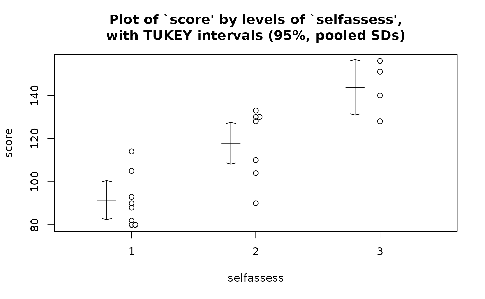
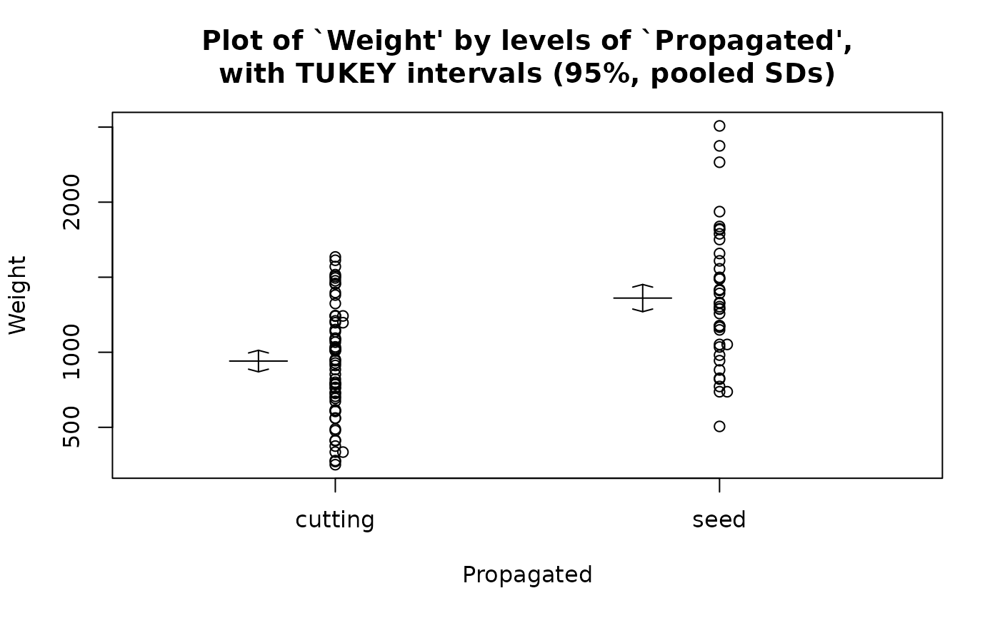
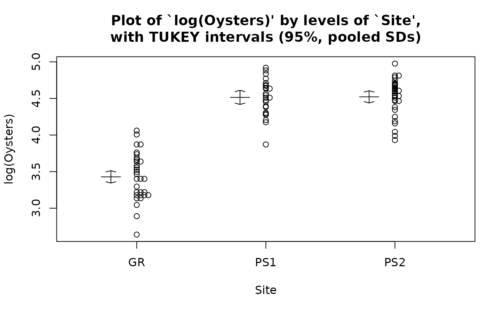

Displays stripplot/boxplot of the reponse variable with intervals by factor levels. It is used as part of a one-way ANOVA analysis.
Usage
onewayPlot(x, ...)
# Default S3 method
onewayPlot(
x,
f,
conf.level = 0.95,
interval.type = "tukey",
pooled = TRUE,
strip = TRUE,
vert = TRUE,
verbose = FALSE,
ylabel = deparse1(substitute(x)),
flabel = deparse1(substitute(f)),
...
)
# S3 method for class 'formula'
onewayPlot(
formula,
data = parent.frame(),
conf.level = 0.95,
interval.type = "tukey",
pooled = TRUE,
strip = TRUE,
vert = TRUE,
verbose = FALSE,
ylabel = deparse(terms(formula)[[2]]),
flabel = deparse(terms(formula)[[3]]),
...
)
# S3 method for class 'lm'
onewayPlot(x, ..., ylabel = nms[1], flabel = nms[2])Arguments
- x
a vector of responses, a formula object or an lm object
- ...
optional arguments.
- f
if x is a vector of responses then f contains the group labels for each observation in x. That is, the ith value in f says which group the ith observation of x belongs to.
- conf.level
confidence level of the intervals.
- interval.type
three options for intervals appearing on plot: 'hsd','lsd' or 'ci'.
- pooled
two options: pooled or unpooled standard deviation used for plotted intervals.
- strip
if strip=FALSE, boxplots are displayed instead.
- vert
if vert=FALSE, horizontal stripplots are displayed instead (boxplots can only be displayed vertically).
- verbose
if true, print intervals on console.
- ylabel
can be used to replace variable name of y by another string.
- flabel
can be used to replace variable name of f by another string.
- formula
a symbolic description of the model to be fit.
- data
an optional data frame in which to evaluate the formula.
Methods (by class)
onewayPlot(default): One-way Analysis of Variance PlotonewayPlot(formula): One-way Analysis of Variance PlotonewayPlot(lm): One-way Analysis of Variance Plot
Note
Deprecated in s20x 3.3.6. summary1way() still draws this plot.
Examples
##see example in 'summary1way'
##computer data:
data(computer.df)
onewayPlot(score~selfassess, data = computer.df)
#> Warning: onewayPlot() and twosampPlot() are deprecated; summary1way() still draws this plot.

##apple data:
data(apples.df)
twosampPlot(Weight~Propagated, data = apples.df)
#> Warning: onewayPlot() and twosampPlot() are deprecated; summary1way() still draws this plot.

##oyster data:
data(oysters.df)
onewayPlot(log(Oysters)~Site, data = oysters.df)
#> Warning: onewayPlot() and twosampPlot() are deprecated; summary1way() still draws this plot.

##oyster data:
data(oysters.df)
oyster.fit = lm(log(Oysters)~Site, data = oysters.df)
onewayPlot(oyster.fit)
#> Warning: onewayPlot() and twosampPlot() are deprecated; summary1way() still draws this plot.